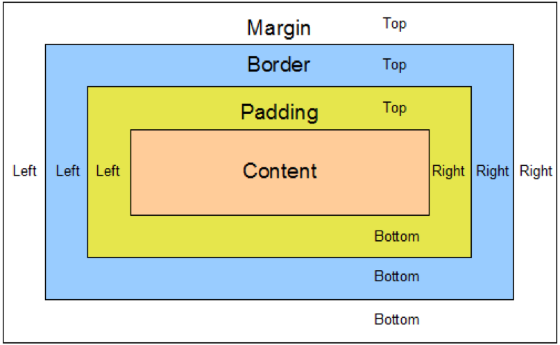
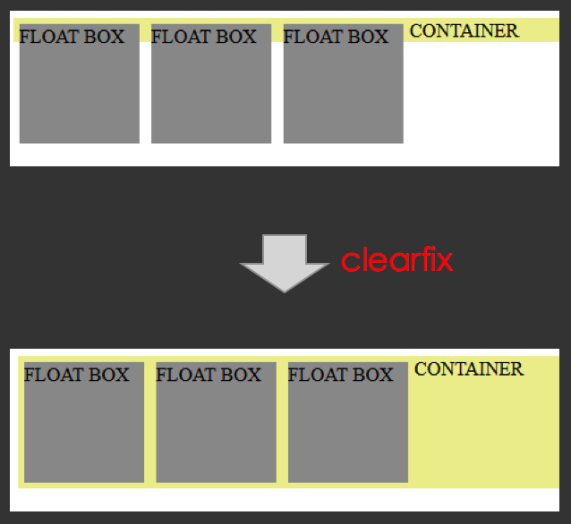

CSS是用來控制網頁樣式的語言，即使網路上有許多前端CSS框架，最有名的就是Bootstrap，很輕易就能做出漂亮的網頁，但是如果不熟悉基本的CSS用法，就會不知道如何修改和調整樣式，只能夠複製貼上網路上已經寫好的範本。
width (寬度)
- 元素寬度是網頁設計中最優先考量的屬性
- 傳統網頁是用固定寬度，響應式網頁則是可變寬度
- max-width 可以解決縮小螢幕時，畫面溢出的問題
- min-width 可以防止表格過窄
- 百分比(%)是一個相對於目前容器元素的單位
單位
- px 是像素單位(pixel)
- % 是相對於目前容器(父元素)大小的單位
- em 是基於目前容器(父元素)的 font-size
- rem 是基於頂層容器(根元素)的 font-size
Box Model（區塊模型）
- 必須為區塊層級(block-level)的元素才擁有完整的區塊模型，
例如: display: block 或是 display: inline-block

- Margin(外邊距)
- Border(邊框)
- Padding(內邊距)
- Content(內容)
margin 水平置中
- 設定 div 左右間距（margin-left 與 margin-right）為 auto ，使其水平居中
margin 垂直合併問題
- 垂直方向的 margin 會互相合併，取兩者之間較大的 margin 值
- 若父容器沒有 border 或 padding，則子元素的 margin 也會與父容器的 margin 合併
block (區塊元素)
- Block元素會獨佔一行，其寬度自動填滿父元素的寬度
- 可以設置 width, height 屬性
- 可以設置 margin, padding 屬性
- 常見區塊元素 div, h1 - h6, p , form, ul, li , ol, dl, form, address, fieldset, hr, menu, table
inline (行內元素)
- inline元素不會獨佔一行，相鄰的行內元素會排列在同一行理，直到一行排不下才會換行，其寬度隨元素的內容而變化
- 設置 width, height 無效
- 水平方向的 padding-left, padding-right, margin-left, margin-right 都有效果
- 垂直方向的 padding-top, padding-bottom 會產生邊距，但是沒有碰撞效果
- 垂直方向的 margin-top, margin-bottom 無效
- 常見行內元素 a, span, strong, em, br, img , input, label, select, button, textarea
inline-block
- inline-block元素不會獨佔一行
- 可以設置 width, height 屬性
- 可以設置 margin, padding 屬性
- 效果類似 float 元素，可用於 div 區塊排版
- 在 HTML 原始碼中，如果行內元素之間有空白或換行，網頁上的元素之間就會產生間隔 (大約4px)
box-sizing 屬性
- box-sizing 用來設定區塊模型所要使用的模式。瀏覽器的預設模型皆為 content-box
- 現在主流的前端設計是採用 border-box，可以使得內距和邊框不會增加元素本身的寬度
1
2
3
4
5
6
| // 套用到所有元素的寫法
* {
-webkit-box-sizing: border-box;
-moz-box-sizing: border-box;
box-sizing: border-box;
}
|
document flow
- document flow(文件流): 根據 HTML 文件的撰寫順序，元素由上至下，由左而右依序排列，並且依照 display 屬性作不同的排版。
- 有兩種屬性會使元素脫離 document flow :
float (浮動元素)
- 使用 float 屬性定義元素為浮動，可以設定靠左或靠右
- 效果類似 inline-block 元素，可用於 div 區塊排版
- 優先權大於行內元素(inline or inline-block)
- 當浮動元素後面有區塊元素時，浮動會覆蓋區塊
- 文繞圖效果
clear 屬性
- 清除區塊元素上的浮動元素
- 用法：clear: left | right |both;
- 使用 clearfix 解決 float 元素之父容器的塌陷問題

1
2
3
4
5
6
7
| .clearfix:before, .clearfix:after {
content: "";
display: table;
}
.clearfix:after {
clear: both;
}
|
position (定位元素)
使用 position 屬性指定網頁元素的定位方式，有以下四種:
- static (靜態) :
- 元素的預設值，static 元素不會被定位，其位置由排列方式決定(document flow)，因此 top、left、right、bottom 會被忽略。
- relative (相對) :
- 相對於 元素本身的靜態位置 而定位，元素位置由 top、left、right、bottom 所決定。
- fixed (固定) :
- 相對於 瀏覽器畫面 而定位，元素位置由 top、left、right、bottom 所決定。
- absolute (絕對) :
- 相對於 元素目前所在的容器 而定位，元素位置由 top、left、right、bottom 所決定。